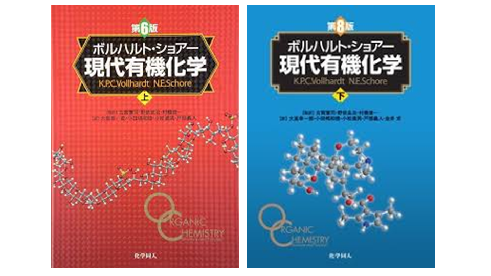
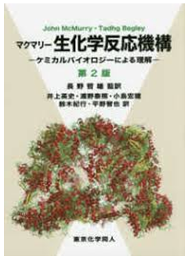
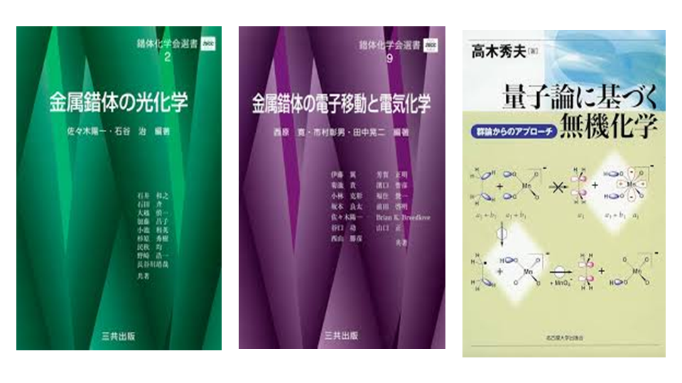
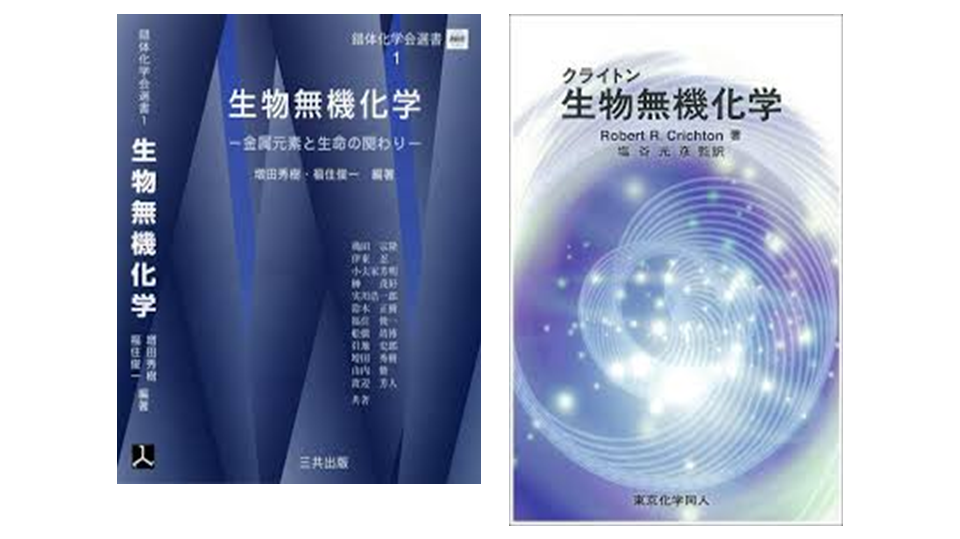
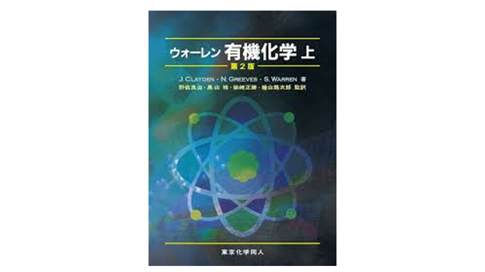

ボルハルト・ショアー有機化学
高校・中学レベルの化学から有機化学の基礎的な概念を導入し、学部1~3年レベルくらいの基本的な反応を網羅的に解説した本。
反応の選択性や保護基、ElectrophileとNeutrophile、共役系などなど、化学の”当たり前”を網羅的に知れるeducativeな本。
2022/10に読了Chemistry
そのうち書き直すかも。
May be rewritten later.
Loved Books

高校・中学レベルの化学から有機化学の基礎的な概念を導入し、学部1~3年レベルくらいの基本的な反応を網羅的に解説した本。
反応の選択性や保護基、ElectrophileとNeutrophile、共役系などなど、化学の”当たり前”を網羅的に知れるeducativeな本。
2022/10に読了
生化学経路の反応機構についてまとめられた希少な本。酵素を利用するといっても多くは単純な有機化学反応を触媒しているのみなことがわかる。生物なので各論的だが、唯一、カルボニルC=Oとアミンが容易に相互変換可能であるという理解は重要だった。生体では基本的にアミノ基をカルボニルに変換して分解したり、逆に付加して分子を合成するので、この1点だけは生命系でも生化学・生理学の理解を促進するかも。
2021~2023
金属錯体のDFT計算の研究をしていた際の背景知識として読んだ本。右二つは主にマーカス理論を理解するため。特に量子論に基づく無機化学は、マーカス理論の定式化に関する様々なアプローチが紹介されている。本全体としても量子論の理論と無機を結びつけていて希少な本。
2023~2024/06
金属錯体の研究をしていた際に辞書的に利用した。
Neucleophilicなアミノ酸が金属の配位子として利用され、配位子-金属中心の結合距離を巧みに操作することで反応性を制御している点が面白く、それを利用したbiomimeticsの研究をしれたのが良かった。
2023~2024/06Upcoming
